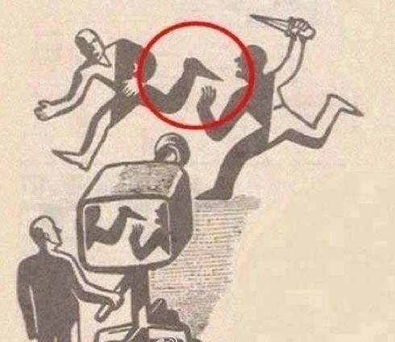

杂记？
这几天都过着寄人篱下的生活，在别人的寝室，用着别人的桌子，别人的网还有别人的电。
实不想这样，但毕竟大四的生活，不是一句话两句话就能解释的清楚的。
直到突然电用没了，屋子里面黑黑的，戴上耳机，听着音乐，竟像自己一个人一样，就突然有了写一点东西的兴趣。

这是前些天翻看相册的时候突然发现的，也许世间事就是这样让人无从辩解，也不知是恨这张照片还是爱，总之是不由自主的点击了保存。
想起了一部电影中的一句话，我们努力奋斗，不是为了改变世界，而是为了不让世界改变我们。
这几天连饭都是订外卖的，索然无味到了什么程度自然可想而知，实在不知道还有哪天的谈资能够写成文字来。